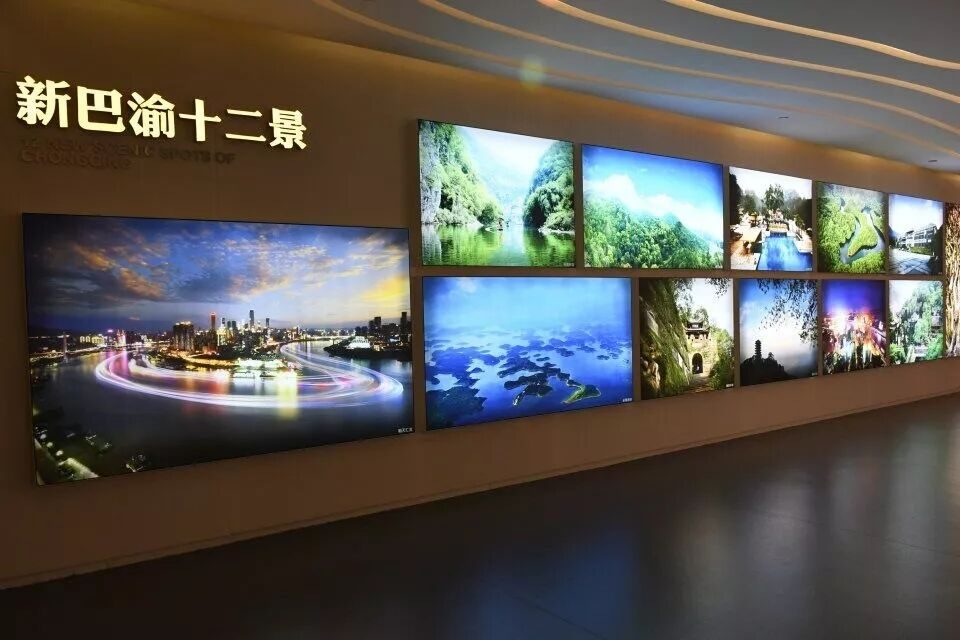
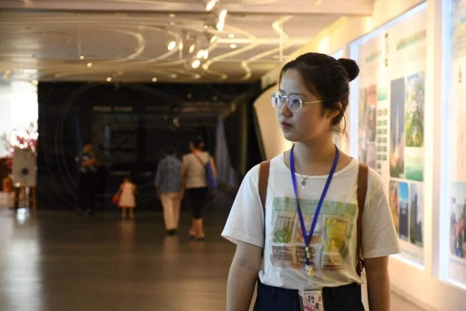
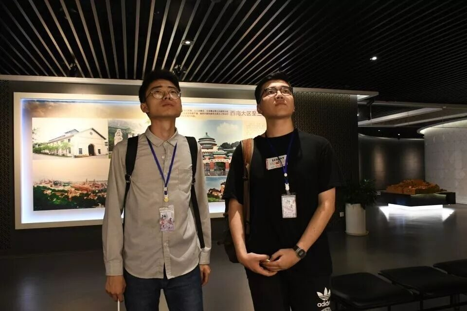
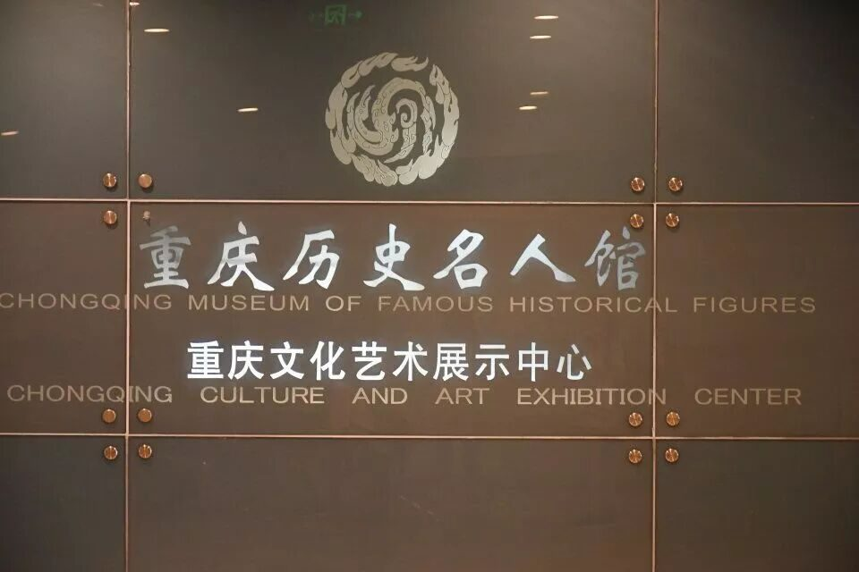
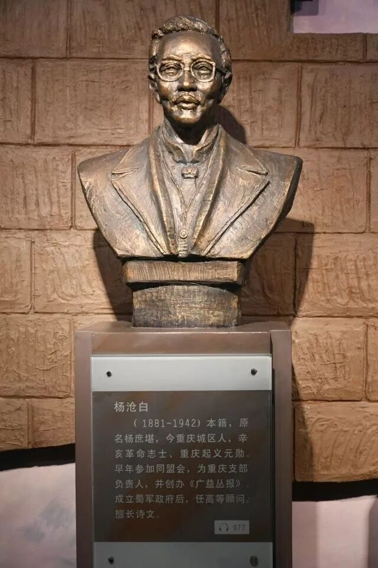
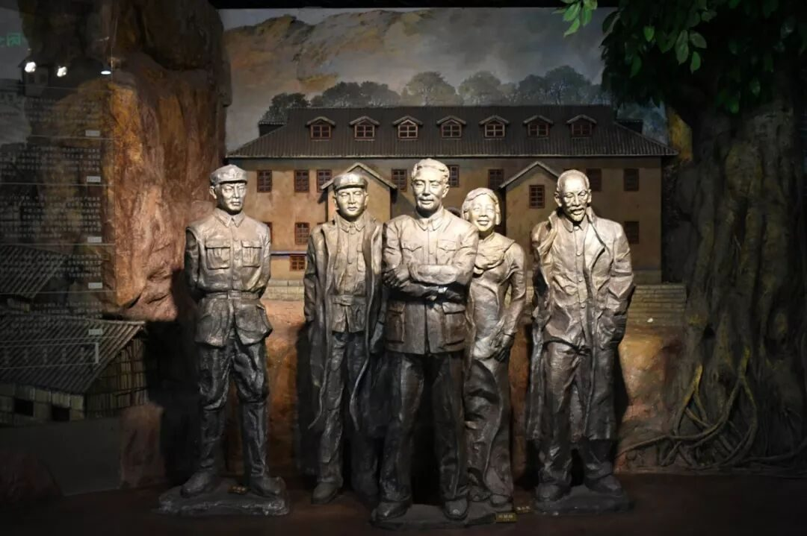
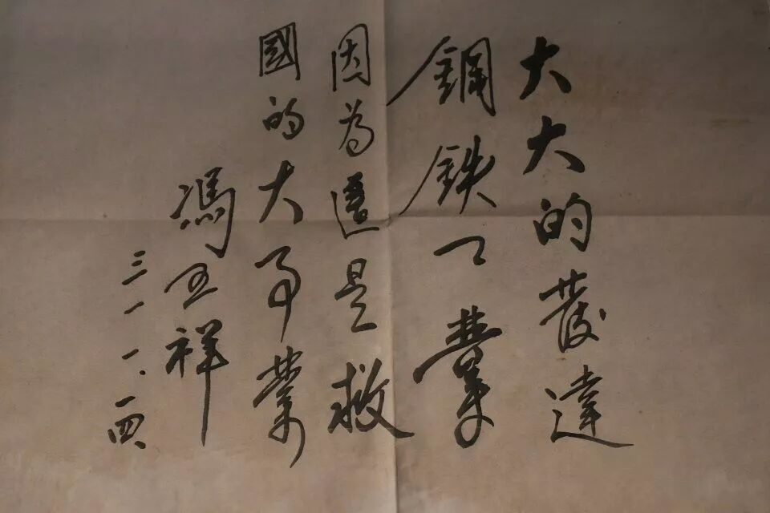

【行者无疆·源洄渝州】初遇渝州
见说蚕丛路，崎岖不易行。
山从人面起，云傍马头生。
芳树笼秦栈，春流绕蜀城。
升沉应已定，不必问君平。
巴山渝水出新韵，诗意淳风入我怀。
三千年历史文脉，八万里山河新卷，
离了的是火车呼啸，近了的是巴渝山水。
有人将重庆譬做婉约女子，
尽放言那巴渝文化似工笔细描，
只刻了她的面容姣好。



定“规划”于此馆，寄精神于将来
——重庆市规划展览馆
如果说博物馆是一个城市对往昔峥嵘的轻言呓语，那么规划展览馆毋庸是重庆对未来坦途的展望期许。


金玉在外，辉煌在内。当沙盘在前，一座城市的发展规划被介绍者如数家珍，逐条列出多而不乱，重庆市规划者们的雄心壮志可见一斑；当步入其中，建设者们列数了国家在两会、长江经济带发展座谈会上对重庆期望，重庆人民的坚定信念昂扬；当集声、光、电、互动为一体的幻影成像影片呈现，观览者们无不赞叹惊艳。
听，他们在说话
——重庆历史名人馆

当明朝戚继光在马上呼喊，秦良玉听见了，这位重庆女将以白杆兵拒清军于山海，令抱头鼠窜、喑哑不言的时人惊骇；当清末谭嗣同在狱中苦吟，邹容听见了，这位重庆书生用“赫赫谭君故，湘湖士气衰。惟冀后来者，继起志勿灰”遥相祭奠，撰写《革命军》令世人汗颜；当战时百姓在枪下哭泣，革命英雄听见了，他们前赴后继改写时事，令山河颜色终变。
大江东去，浪淘尽，千古风流人物。隔江尤听江水浩荡，满城烟雨，漫江鲜血。你在三峡唱响船号，你在巫山高声吟唱，你在刀下慷慨激昂，你在台上放声颂唱。



我们听见了。
一碑祷四方
——抗战胜利纪功碑
暨人民解放纪念碑
如果有一地居闹市之中，一旁车来车往；有点名声，却无半点风景观赏，又是否会被市民或是游人遗忘？答案在解放碑上便无有失望，无论是忠贞报国精神之昭彰抑或敢为人先胆气之发扬，他都在那供你观赏永不遗忘。
无论生在何时何地，解放碑始终不改其绽放的光芒。战时通体黝黑，一展国人意志之坚强；太平时身处繁华胜地，引得无数行人瞻仰。市井间民族正气浩然孑立，这繁华便是最好的碑文勋章。
君莫见那英雄文化的铮铮铁血血染山河，
浩然正气气吞万里？
便是女子，
也当如木兰、良玉，
手持长缨英气逼人，
碧血丹心心如赤子。
来源丨行者无疆实践团
文字丨王耿
排版丨陈嘉颖
审核丨邓子孚 段智然
行者无疆实践团
QQ：2758025831

随行者一起认识世界
长按二维码关注